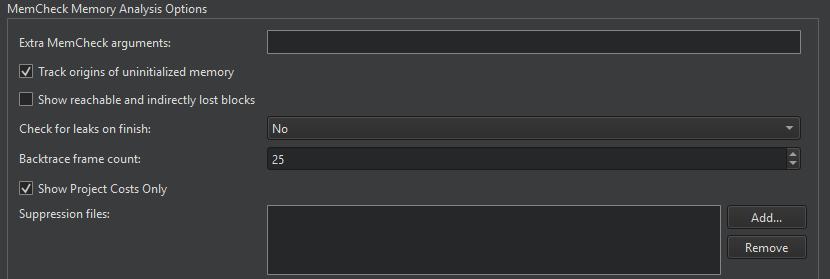

Valgrind Memcheck
Set Valgrind preferences either globally for all projects or separately for each project in the run settings of the project.
To set global preferences for Valgrind, select Preferences > Analyzer. Set Memcheck preferences in Memcheck Memory Analysis Options.

In Extra Memcheck arguments, specify additional arguments for launching the executable.
Setting Stack Trace Length
Stack traces can get quite large and confusing, and therefore, reading them from the bottom up can help. If the stack trace is not big enough or it is too big, select Preferences > Analyzer and define the length of the stack trace in the Backtrace frame count field.
Tracking Origins of Uninitialized Memory
Memcheck also reports uses of uninitialised values, most commonly with the message Conditional jump or move depends on uninitialised value(s). To determine the root cause of these errors, Memcheck tracks origins of uninitialized memory. Clear Track origins of uninitialized memory to make Memcheck run faster.
Viewing a Summary
Memcheck searches for memory leaks when the client application finishes. To view the amount of leaks that occurred, select Summary Only in the Check for leaks on finish field. To also view details of each leak, select Full.
Showing Reachable and Indirectly Lost Blocks
Reachable blocks are blocks that are pointed at by a pointer or chain of pointers and that might have been freed before the application exited. Indirectly lost blocks are considered lost because all the blocks that point to them are themselves lost. For example, all the children of a lost root node are indirectly lost.
By default, Memcheck does not report reachable and indirectly lost blocks. To have them reported, select Show reachable and indirectly lost blocks.
Suppressing Errors
Memcheck detects numerous problems in the system libraries, such as the C library, which come pre-installed with your OS. As you cannot easily fix them, you want to suppress them. Valgrind reads a list of errors to suppress at startup. A default suppression file is created by the ./configure script when the system is built.
You can write your own suppression files if parts of your project have errors you cannot fix and you do not want to be reminded of them. Select Add in the MemCheck Memory Analysis dialog to add the suppression files.
For more information about writing suppression files, see Suppressing Errors in the Valgrind documentation.
See also Detect memory leaks with Memcheck, Profile function execution, Run Valgrind tools on external applications, Specify Valgrind settings for a project, and Valgrind Callgrind.